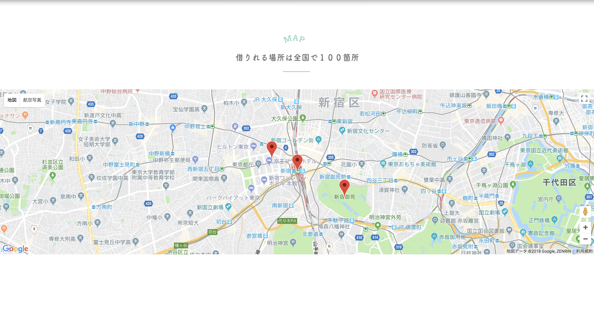
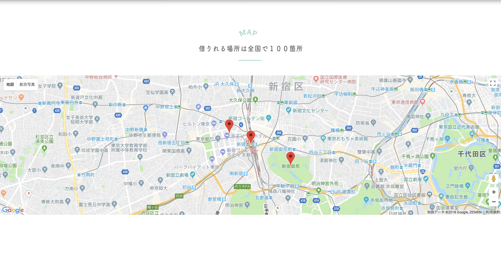

プロジェクトKOIDEL
-
作品概要
「KOIDEL（コイデル）」はカップルに自転車で、面白いスポットに行ったり徒歩では行きづらい場所でデートなど、楽しい思い出作りをもっとしてほしいと思って考えたサービスになります。
「KOIDEL（コイデル）」というタイトルは「恋ができる」と「自転車を漕いでる」というのを掛けております。
実際にあるサービスではないですが、ポートフォリオがほしかったため、
企画からカンプデザイン・コーディングまで一人で制作しました。
-
製作年月日
2018年10月
-
コンセプト
自転車をカップルに使って欲しくて、最終的にアプリをダウンロードして欲しくて作りました。
-
製作環境と使用言語
HTML5
CSS3
JavaScript